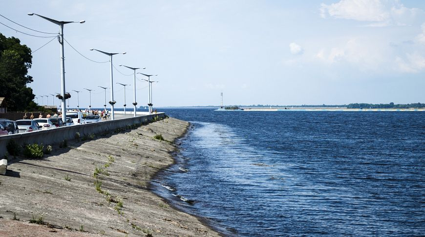
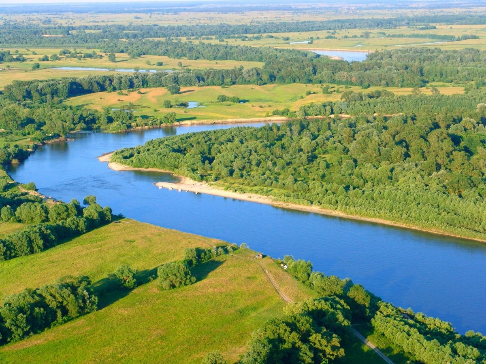

Розташування Києва
Київ — столиця України, одне з найбільших і найстаріших міст Європи. Розташований у середній течії Дніпра, у північній Наддніпрянщині.
Політичний, соціально-економічний, транспортний та освітньо-науковий центр країни. Окрема адміністративно-територіальна одиниця у складі України і адміністративний центр Київської області. Місце розташування центральних органів влади України, іноземних місій, штаб-квартир більшості підприємств та громадських об'єднань, що працюють в Україні.
 Карта районів Києва.
Карта районів Києва.
Населення Києва
Населення Києва 3 зміни у цій версії очікують на перевірку. Стабільну версію було перевірено 2 квітня 2023. Київ — найбільше місто в Україні та сьоме в Європі за кількістю жителів, станом на 1 грудня 2019 року його населення становило 2,966 млн.
Київське море
Київське водосховище, або як його ще звикли називати місцеві жителі Київське море, третє за площею в Україні (понад 922 кв. кілометри). Об'єм води який тут міститься справді вражає — понад 3730 мільйонів метрів кубічних.

Дніпро
Дніпро є однією з найбільших і найважливіших рік Європи. Протягом віків ріка відігравала і продовжує відігравати важливу роль у житті людини. Великим і різноманітним є сучасне використання Дніпра: він забезпечує мільйони людей питною водою, слугує для водозабезпечення промислових підприємств та зволожує сотні тисяч гектарів посушливих земель. Окрім того, Дніпро дає змогу виробляти велику кількість електроенергії. Значною залишається роль ріки як транспортної артерії та використання ріки для відпочинку – такі піщані пляжі, які є на Дніпрі, непросто знайти на інших, навіть значно більших ріках Європи.
